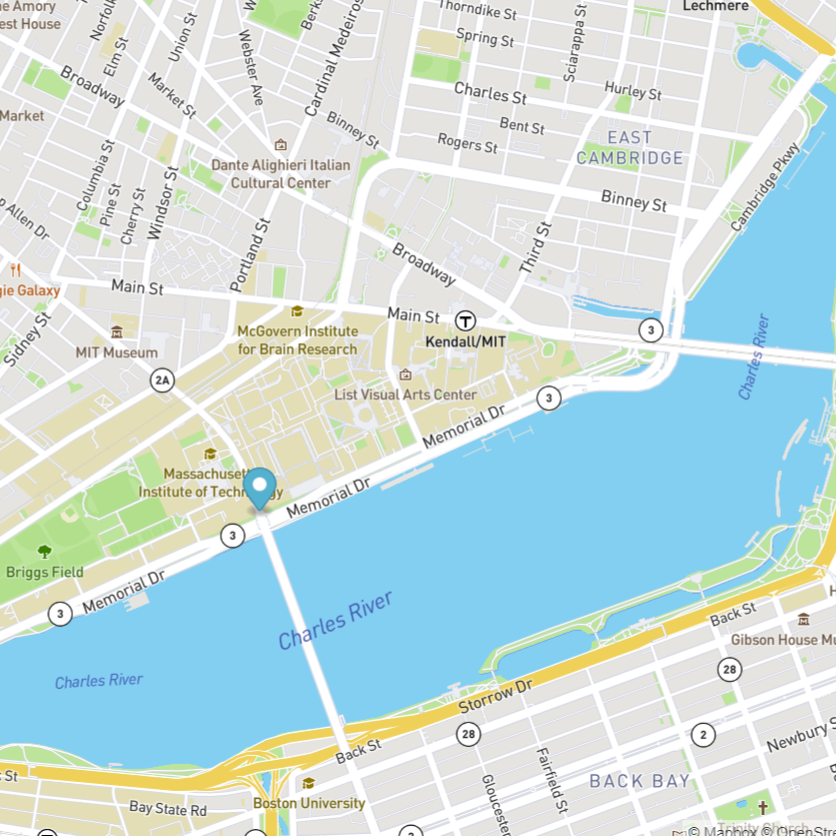

Current Projects
Projects from the MITxPro Professional Certificate in Coding: Fullstack Development with MERN program. These projects use a mix of HTML, JavaScript, and CSS.

PacMen Exercise
In this project, you can generate as many Pacmen as you want. They will show up randomly around the page and will move in random directions.

Eye Movement Exercise
In this project, two eyes were created on the page. The eyes will follow the movement of the cursor while you remain on the page.

Bus Tracking Exercise
Using the MBTA bus data, the stops between Harvard and MIT were determined. Animated markers were also added to highlight the bus routes.